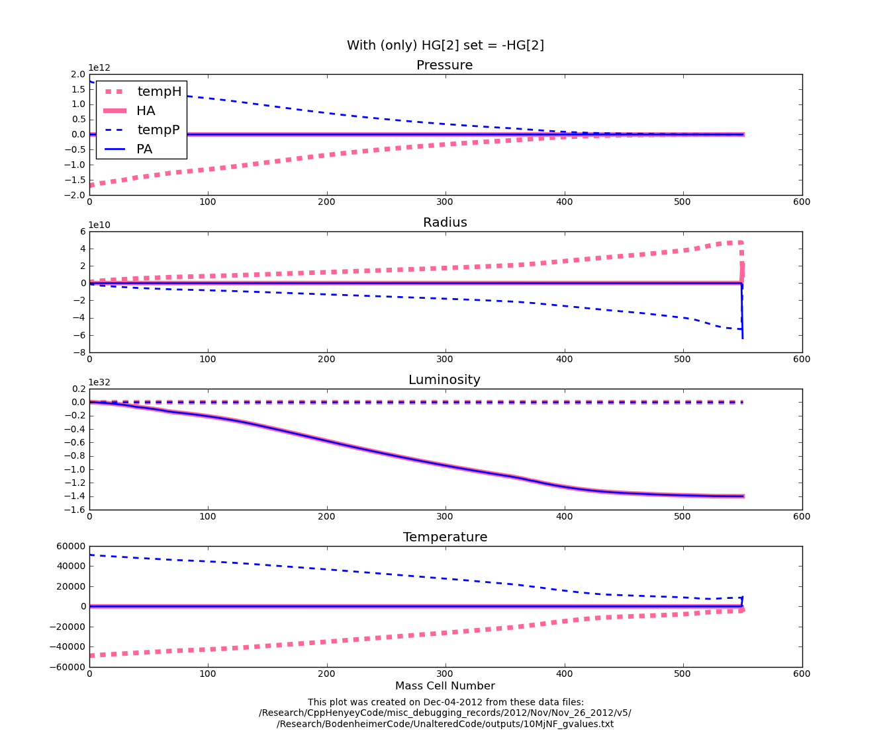
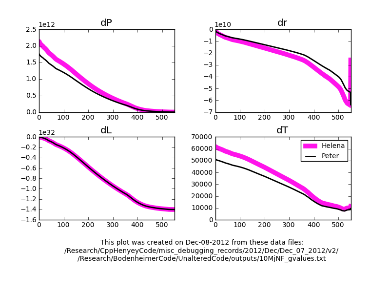

Date & Time: Dec. 7, 2012
Location: Campus
Computing context: /Desktop/Research/CppHenyeyCode, /Desktop/Research/BodenheimerCode/UnalteredCode/
From last time:


For the luminosity values, the temp values are (close enough to) zero, and the A values matter. For all the other variables, though, the A values don't really matter, and it's the temp values that determine the result.
Question: are the A values for all the variables of opposite signs, as they are for the luminosity?
--> Answer (see Figure 2): it's only a luminosity thing.
For reference, here's how the temp and A values change if you ONLY set HG[2] = -1.0*HG[2] (Figure 1):

When I change the sign
on Helena's G[2] (luminosity) values, it doesn't get all of the dX
profiles to line up. Rather, it just switches which profiles' signs
match and which don't. So, it's not an issue limited to the G
values. Therefore, I guess it has to be an issue w/ the signs in
Helena's CDE values? Which would kind of make sense if the G[2]
values are the wrong sign, since the CDE values are just derivatives
of the G values.
Figure
1:
Figure 2 shows what happens when I reverse the signs on the Helena CDE values (but not the G values). Now, instead of the dX sign reversals seen in Figures 2 and 3, you get dX profiles that are not only of opposite signs, but also of different magnitudes. So, in short, it makes the problem worse.
However, it may be an issue of just changing the signs of selected rows or columns of Helena's CDE matrices (perhaps the ones that depend on the luminosity?)

Figure
2
Continue probing what the effects on switching the signs of only certain rows or columns of the Helena CDE matrices has on the dX profile signs/values, etc.
In an effort to figure out why only the A[2] values signs are reversed b/w the two codes, I've made the color-coded schematic calculation of the innermost HA and PA values shown in Figures 3 and 4, respectively.
The HA[0] calculations.
Figure
3:
The PA[0] calculations.
Figure
4:
The results in Figures 3 and 4 make me wonder if the issue is with the B matrices, rather than the A matrices. To test this, I performed the HdX calculations using the PB values in place of the HB ones. Figure 7 shows the result. Basically, it has the same effect that -1.0*[HC/HD/HE] does on the results in terms of magnitude, but NOT in terms of overall sign.
Figured out that the way I've been doing the CDE calculations in Helena is backwards. At the very least, that would make all my CDE values have the wrong Sign. But, there must be more than that that's getting screwed up, b/c When I multiply the HCDE values by -1.0 in the python code before using those values in any subsequent calculations, I still end up w/ the wrong dX profiles . In fact, they turn out very oscillate-y. So, there's got to be something beyond just these sign differences going on.
In fact, if I run the dX profile calculations with PCDE values, but using HG values, Figure 5 (left) shows what happens. So, obviously, something about the way my G values are being calculated is contributing to the problem, somehow. Notice that the luminosity correction profiles line up perfectly, though...
Figure 5 (right) also shows the results of doing the opposite: setting HG = PG, but keeping the HCDE values as normal. Here, the Peter and Helena dX profiles (dis)agree in the same general way that they do when you run the standard dX calculations (e.g. Figures 1-3). In other words, swapping out the G values doesn't seem to have an effect on the result, but swapping out the CDE values does.
Figure
5
My only for what might be going on w/ the CDE stuff in Helena is that the varied-variable swapping in/out process isn't returning the PRLT values (or perhaps the rho/cP/other look-up values based on them) to their original un-varied state b/w each stage of the calculations.
Start here tomorrow-- check what the PRLT (and associated lookup variable) values are before and after each swap in/out step in my code.
Today's work:
I went ahead and fixed the CDE calculation-order-stuff in my code, and suddenly everything works! See Figure 6.

Comparison of Helena
and Peter dX profiles after I fixed the numerators of the CDE
calculations in Helena. Voila! All the signs agree!
Figure
6:
I'm a little baffled as to why that actually worked, but hey-- gift horses, mouths, etc.
If I correct the outer HA values (set them equal to their Peter counterparts), then I get the correct dX profiles. So, need to look into getting those outer CDEG values to agree b/w the two codes.
However, I think they are closer to agreeing w/ each other than they were before I did all that atmos debugging, so that's encouraging.
Also, as it is now, I think both codes produce dX profiles of the same signs, so even if I can't get them to agree perfectly w/ each other, they should still have the same net effect on the model they're trying to converge. In other words: it may not be a federal case if I can't figure this bit of the problem out.
Now, I want to take a look at what's going on w/ the CDEG values right at the outer boundary-- are the G values different out there, or only the CDE values? Important-ish, because the outermost A-matrix values (which depend on the CDEGs) set what the rest of the dX profile looks like.
--> Okay, it looks like the outermost G values differ more b/w codes than the outermost C and D values do. I don't really think this is a bit issue, so I'll move on to the next step of the debugging. However, this mild(?) discrepancy at the outer boundary in the CDEG values is something to keep in mind if problems with my code come to light later on in the debugging process.
Here's the debugging checklist, as it currently stands, and where I am in it right now:
Research and Work Stuff
See
if Peter's code will still converge a 10 Mj no fusion model w/ the
L/H parameter set to zero.
Make
sure both codes now produce the same CDEG profiles, particularly at
the outer boundary / bottom of the atmosphere.
Make
sure that both codes now produce the same P/R/L/T correction
profiles.
Check that Helena successfully converges the 10Mj no fusion model
Compare the converged model to Peter's results
Check that Helena and Peter also produce the same converged model with dTime > 0
Start next time by fleshing out the remaining steps on this checklist (on workflowy.com), and then start doing them.